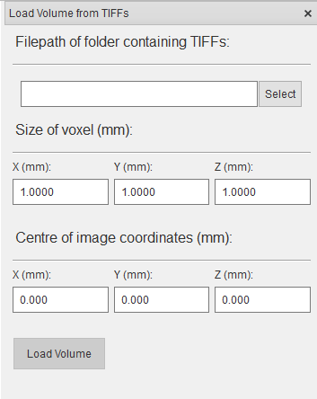

Insert Tomography Volume¶
Tomography volumes may be added from Nexus files (HDF5 files conforming to the NXtomoproc standard), or from a number of .TIFF files. Both options are detailed below
Import a Tomography Volume from Nexus¶
The Nexus file must conform to the Nexus standard NXtomoproc.
Click Insert > Sample > Tomography Data > Nexus File and browse to the location of the Nexus file and select it. The tomography volume will be loaded into memory.
Tip
The file suffix can be any of .nxs, .h5, or .nex however it must conform to the standard to be loaded
Import a Tomography Volume from TIFF Files¶
The TIFF files can be .TIFF or .TIF and should be named with an appropriate numbering system to load them in the correct order. Click Insert > Sample > Tomography Data > TIFF Files and select to the folder containing the TIFF files and select it. In addition, the size of pixel of every axis and the coordinates of the centre pixel need to be defined manually, both are in mm. The tomography volume will be loaded into memory.
{kind=link}